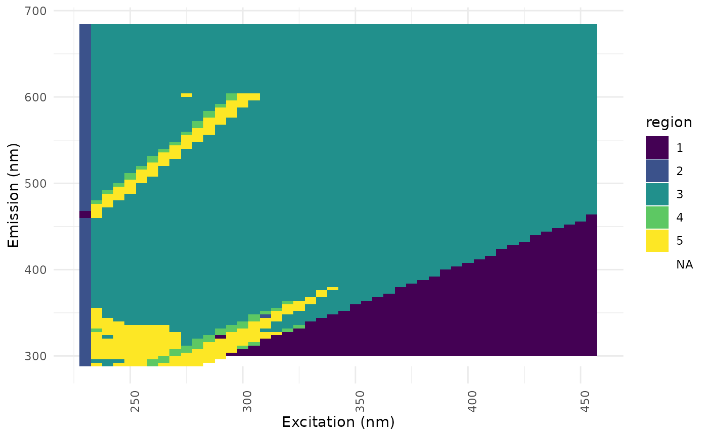

Find fluorescence regions from correlated component planes
Source:R/region_functions.R
eemsom_regions.RdWavelength pairs with similar behaviour across the units of a self-organising map are grouped into regions. Each region is assumed to represent a fluorescence component (Ejarque-Gonzalez and Butturini 2014). The component planes are arranged on a second self-organising map ("R-mode") and its units are clustered hierarchically.
Usage
eemsom_regions(
som,
k = 2:9,
method = "planes",
dim = "auto",
cluster_method = "complete",
seed = NULL,
...
)
# S3 method for class 'eemsom_regions'
print(x, ...)Arguments
- som
object of class eemsom, see
eemsom- k
number of regions (a single number) or candidates (a vector, default 2 to 9) from which the number with the highest mean silhouette width is chosen. NULL is the same as
2:9.- method
"planes"(default) or"cormat", see details- dim
size of the R-mode map, either
"auto"(default) or a numeric vectorc(xdim, ydim), seeeemsom- cluster_method
clustering method of the R-mode units, see
eemsom_cluster- seed
seed for the random number generator. With
NULL(default), the current random number stream of the session is used, soset.seedbefore the call gives reproducible results. With a number, the seed is set for this calculation only and the random number state of the session is restored afterwards.- ...
additional parameters that are passed on to
som. The default number of iterations isrlen = 100.- x
object of class eemsom_regions
Value
object of class eemsom_regions, a list containing
regions: data frame with columns ex, em and region
k: number of regions
kselect: data frame with criteria for the candidates (see
eemsom_kselect), NULL if k was a single numberrsom: R-mode self-organising map of class kohonen
unit_regions: region of each unit of the R-mode map
method, cluster_method, seed: settings used. Without a given
seed, a seed is drawn from the random number stream of the session and used for the map and the clustering.
Details
Following Barreto-Sanz and Perez-Uribe (2007), Ejarque-Gonzalez and Butturini (2014) calculated a self-organising map from the matrix of Pearson's correlations between all component planes (method = "cormat"). This matrix has as many rows and columns as wavelength pairs and the calculation gets slow with a high resolution of the EEMs (minutes with a few thousand wavelength pairs).
With method = "planes", each component plane is centred and scaled to length 1. The squared Euclidean distance of two such vectors equals \(2(1 - r)\), where r is their correlation. The R-mode map is calculated from these vectors directly, which is much faster and groups wavelength pairs by their correlation as well.
Both methods group wavelength pairs by the correlation of their component planes, but the R-mode maps are trained on different vectors. The resulting regions are similar but not identical and the region numbers can differ.
Wavelength pairs with constant component planes have no correlation and get no region (NA), as well as wavelength pairs that were not used in the map.
References
Barreto-Sanz, M. A., Perez-Uribe, A. (2007). Improving the Correlation Hunting in a Large Quantity of SOM Component Planes. In: Artificial Neural Networks - ICANN 2007, Lecture Notes in Computer Science 4669, 379-388. doi:10.1007/978-3-540-74695-9_39
Ejarque-Gonzalez, E., Butturini, A. (2014). Self-Organising Maps and Correlation Analysis as a Tool to Explore Patterns in Excitation-Emission Matrix Data Sets and to Discriminate Dissolved Organic Matter Fluorescence Components. PLoS ONE 9(6), e99618. doi:10.1371/journal.pone.0099618
See also
Other fluorescence regions:
eemsom_fri(),
ggeem.eemsom_regions()
Examples
data(eem_list)
som <- eemsom(eem_list, rlen = 100, seed = 42)
regions <- eemsom_regions(som, dim = c(8, 8), seed = 42)
regions
#> Fluorescence regions from a self-organising map
#> regions: 5 (highest mean silhouette)
#> wavelength pairs per region:
#> region
#> 1 2 3 4 5 <NA>
#> 690 98 3407 47 210 102
regions$kselect
#> k silhouette negative davies_bouldin wss
#> 1 2 0.5289029 1 0.8991831 18.953026
#> 2 3 0.4935634 4 0.8106401 13.597859
#> 3 4 0.5110400 3 0.8933328 10.530803
#> 4 5 0.5406266 2 0.7641568 8.043880
#> 5 6 0.4010602 5 0.9335648 6.474846
#> 6 7 0.3902372 6 0.8887994 5.936385
#> 7 8 0.3859532 5 0.8975793 5.005135
#> 8 9 0.3942897 3 0.8294526 4.517863
ggeem(regions)

# fixed number of regions
eemsom_regions(som, k = 3, dim = c(8, 8), seed = 42)
#> Fluorescence regions from a self-organising map
#> regions: 3 (given)
#> wavelength pairs per region:
#> region
#> 1 2 3 <NA>
#> 788 3454 210 102